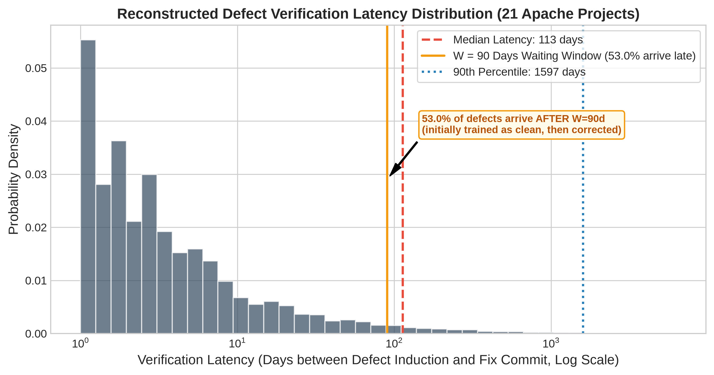

Phase 1 & 2 Empirical Research Report (v2 Corrected)
Topic: Downstream Impact of SZZ Label Noise Under Honest Evaluation Regimes
Benchmark: 21 Apache Software Projects | 14,700 Experimental Configurations | 10 Random Seeds
Executive Summary
SZZ Precision Ceiling
27.2%
Over 72% to 81% of SZZ-flagged bugs are false alarms
Regime Leakage Delta
-0.141 MCC
JITLine Oracle: 0.243 (naive) → 0.103 (chronological, p=2.9e-6)
Real Online Stream MCC
0.0685
Oracle ORB G-mean 0.546 under median 113-day latency
Core Empirical Findings:
- Temporal Data Leakage: Naive random k-fold produces a large, artificial inflation (JITLine oracle MCC +0.141, Cliff's δ = 0.737, p = 2.86 × 10-6).
- Self-Deception Gap: Evaluating models on the same SZZ labels used for training spuriously inflates performance (BSZZ naive self-scored MCC 0.355 vs oracle-scored 0.175, Δ = +0.180, Cliff's δ = 0.811).
- Sanity Ordering Restored: Under real verification latency, oracle-trained ORB restores ground truth superiority (MCC 0.0685, G-mean 0.5460), beating BSZZ (0.0559 / 0.5060) in 14/21 projects.
- JITLine Anomaly Decomposed: Threshold moving improves oracle-trained JITLine to 0.103 MCC, while BSZZ-trained reaches 0.131 (BSZZ wins in 13/21 projects), proving the remaining advantage is genuine minority-enrichment under 8.5% imbalance.
Phase 1: Intrinsic Label Quality & Noise Profile
Evaluated 6 modern SZZ variants against human ground truth oracle on the unified 27,319-commit universe across 21 Apache repositories.
| SZZ Variant | Precision | Recall | F1-Score | G-Mean | FPR (ρ0) | FNR (ρ1) | Cohen's κ | MCC |
|---|---|---|---|---|---|---|---|---|
| BSZZ | 0.1855 | 0.6411 | 0.2877 | 0.6875 | 0.2627 | 0.3589 | 0.1790 | 0.2318 |
| AGSZZ | 0.1855 | 0.4674 | 0.2656 | 0.6147 | 0.1915 | 0.5326 | 0.1633 | 0.1876 |
| MASZZ | 0.1826 | 0.4820 | 0.2649 | 0.6205 | 0.2013 | 0.5180 | 0.1610 | 0.1877 |
| LSZZ | 0.2720 | 0.2667 | 0.2693 | 0.4989 | 0.0666 | 0.7333 | 0.2019 | 0.2019 |
| RSZZ | 0.2318 | 0.2997 | 0.2615 | 0.5215 | 0.0927 | 0.7003 | 0.1828 | 0.1846 |
| RASZZ | 0.1840 | 0.4383 | 0.2592 | 0.5990 | 0.1813 | 0.5617 | 0.1580 | 0.1784 |

Figure 1: Precision, Recall & F1 of SZZ Variants vs. Oracle Ground Truth

Figure 2: Asymmetric Noise Rates (FPR ρ0 vs. FNR ρ1)

Figure 3: Inter-Variant Cohen's Kappa (κ) Agreement Matrix
Phase 2: Downstream Model Performance Under Honest Evaluation
Models evaluated: LApredict (single-feature logistic regression), JITLine (Random Forest + SMOTE + threshold moving), and ORB (online ensemble with real verification latency).
Performance Across Evaluation Regimes (Oracle-Scored MCC / G-Mean)
| Model | Training Label Source | Naive K-Fold (Leaky) [MCC / G-mean] | Chronological Split (Honest Batch) [MCC / G-mean] | Prequential Latency (Realistic Stream) [MCC / G-mean] |
|---|---|---|---|---|
| JITLine | oracle | 0.2300 / 0.6933 | 0.1027 / 0.5223 | N/A (Batch Model) |
| JITLine | BSZZ | 0.1701 / 0.6438 | 0.1285 / 0.5790 | N/A (Batch Model) |
| JITLine | AGSZZ | 0.1144 / 0.5961 | 0.0835 / 0.5459 | N/A (Batch Model) |
| JITLine | MASZZ | 0.1205 / 0.6017 | 0.0752 / 0.5222 | N/A (Batch Model) |
| JITLine | LSZZ | 0.1380 / 0.6036 | 0.0791 / 0.4998 | N/A (Batch Model) |
| JITLine | RSZZ | 0.1103 / 0.5896 | 0.0662 / 0.5059 | N/A (Batch Model) |
| JITLine | RASZZ | 0.1156 / 0.5957 | 0.0714 / 0.5330 | N/A (Batch Model) |
| LApredict | oracle | 0.2058 / 0.6770 | 0.1734 / 0.6387 | N/A (Batch Model) |
| LApredict | BSZZ | 0.1941 / 0.6672 | 0.1634 / 0.6539 | N/A (Batch Model) |
| LApredict | AGSZZ | 0.2003 / 0.6735 | 0.1685 / 0.6552 | N/A (Batch Model) |
| LApredict | MASZZ | 0.1995 / 0.6729 | 0.1664 / 0.6542 | N/A (Batch Model) |
| LApredict | LSZZ | 0.2078 / 0.6719 | 0.1706 / 0.6293 | N/A (Batch Model) |
| LApredict | RSZZ | 0.2016 / 0.6749 | 0.1731 / 0.6544 | N/A (Batch Model) |
| LApredict | RASZZ | 0.2000 / 0.6727 | 0.1679 / 0.6504 | N/A (Batch Model) |
| ORB | oracle | N/A (Online Model) | N/A (Online Model) | 0.0685 / 0.5460 |
| ORB | BSZZ | N/A (Online Model) | N/A (Online Model) | 0.0566 / 0.5344 |
| ORB | AGSZZ | N/A (Online Model) | N/A (Online Model) | 0.0125 / 0.4792 |
| ORB | MASZZ | N/A (Online Model) | N/A (Online Model) | -0.0030 / 0.4547 |
| ORB | LSZZ | N/A (Online Model) | N/A (Online Model) | 0.0209 / 0.4869 |
| ORB | RSZZ | N/A (Online Model) | N/A (Online Model) | 0.0104 / 0.4847 |
| ORB | RASZZ | N/A (Online Model) | N/A (Online Model) | 0.0184 / 0.4866 |

Figure 4: Evaluation Regime Inflation (Naive K-Fold vs. Chronological)

Figure 5: The Self-Deception Gap (Self-Scoring vs. Oracle Scoring)

Figure 6: ORB Streaming Model Performance Under Real Verification Latency

Figure 7: Summary Performance Transition Across Regimes and Ground Truth

Figure 8: Reconstructed Verification Latency Distribution (Median 113 Days, 53% > 90 Days)
Statistical Validation & Key Takeaways
| Comparison Type | Model | Label Source | Condition A | Condition B | Mean A | Mean B | Mean Diff | p-value | Cliff's δ | Magnitude |
|---|---|---|---|---|---|---|---|---|---|---|
| regime_inflation | LApredict | oracle | naive_kfold | chronological | 0.2058 | 0.1734 | +0.0324 | 0.0502 | +0.247 | small |
| regime_inflation | LApredict | BSZZ | naive_kfold | chronological | 0.1941 | 0.1634 | +0.0307 | 0.0646 | +0.252 | small |
| regime_inflation | LApredict | RSZZ | naive_kfold | chronological | 0.2016 | 0.1731 | +0.0285 | 0.1111 | +0.247 | small |
| regime_inflation | JITLine | oracle | naive_kfold | chronological | 0.2300 | 0.1027 | +0.1273 | 9.54e-07 | +0.741 | large |
| regime_inflation | JITLine | BSZZ | naive_kfold | chronological | 0.1701 | 0.1285 | +0.0415 | 0.0646 | +0.311 | small |
| regime_inflation | JITLine | RSZZ | naive_kfold | chronological | 0.1103 | 0.0662 | +0.0441 | 0.0022 | +0.374 | medium |
| regime_effect_model_fixed | ORB | oracle | chronological_online | prequential_latency | 0.0777 | 0.0685 | +0.0093 | 0.8382 | -0.075 | negligible |
| learner_effect_regime_fixed | JITLine_vs_ORB | oracle | JITLine (chronological) | ORB (chronological_online) | 0.1027 | 0.0777 | +0.0250 | 0.2180 | +0.249 | small |
| learner_effect_regime_fixed | LApredict_vs_ORB | oracle | LApredict (chronological) | ORB (chronological_online) | 0.1734 | 0.0777 | +0.0957 | 1.05e-04 | +0.533 | large |
| regime_effect_model_fixed | ORB | BSZZ | chronological_online | prequential_latency | 0.0767 | 0.0566 | +0.0200 | 0.2428 | +0.179 | small |
| learner_effect_regime_fixed | JITLine_vs_ORB | BSZZ | JITLine (chronological) | ORB (chronological_online) | 0.1285 | 0.0767 | +0.0519 | 0.0158 | +0.297 | small |
| learner_effect_regime_fixed | LApredict_vs_ORB | BSZZ | LApredict (chronological) | ORB (chronological_online) | 0.1634 | 0.0767 | +0.0867 | 3.54e-04 | +0.488 | large |
| self_deception_gap | JITLine | BSZZ | self_scored (naive_kfold) | oracle_scored (naive_kfold) | 0.4181 | 0.1701 | +0.2480 | 9.54e-07 | +0.955 | large |
| self_deception_gap | LApredict | BSZZ | self_scored (naive_kfold) | oracle_scored (naive_kfold) | 0.3510 | 0.1941 | +0.1569 | 9.54e-06 | +0.850 | large |
| self_deception_gap | JITLine | BSZZ | self_scored (chronological) | oracle_scored (chronological) | 0.2176 | 0.1285 | +0.0891 | 0.0016 | +0.488 | large |
| self_deception_gap | LApredict | BSZZ | self_scored (chronological) | oracle_scored (chronological) | 0.2918 | 0.1634 | +0.1284 | 5.25e-05 | +0.728 | large |
| self_deception_gap | ORB | BSZZ | self_scored (prequential_latency) | oracle_scored (prequential_latency) | 0.1125 | 0.0566 | +0.0559 | 0.0263 | +0.342 | medium |
| self_deception_gap | ORB | BSZZ | self_scored (chronological_online) | oracle_scored (chronological_online) | 0.1613 | 0.0767 | +0.0846 | 6.68e-05 | +0.483 | large |
| self_deception_gap | JITLine | AGSZZ | self_scored (naive_kfold) | oracle_scored (naive_kfold) | 0.3091 | 0.1144 | +0.1948 | 9.54e-07 | +0.819 | large |
| self_deception_gap | LApredict | AGSZZ | self_scored (naive_kfold) | oracle_scored (naive_kfold) | 0.2472 | 0.2003 | +0.0469 | 0.1678 | +0.311 | small |
| self_deception_gap | JITLine | AGSZZ | self_scored (chronological) | oracle_scored (chronological) | 0.1299 | 0.0835 | +0.0464 | 0.0502 | +0.324 | small |
| self_deception_gap | LApredict | AGSZZ | self_scored (chronological) | oracle_scored (chronological) | 0.1975 | 0.1685 | +0.0290 | 0.3205 | +0.224 | small |
| self_deception_gap | ORB | AGSZZ | self_scored (prequential_latency) | oracle_scored (prequential_latency) | 0.0609 | 0.0125 | +0.0483 | 0.0595 | +0.347 | medium |
| self_deception_gap | ORB | AGSZZ | self_scored (chronological_online) | oracle_scored (chronological_online) | 0.0684 | 0.0177 | +0.0507 | 0.0319 | +0.229 | small |
| self_deception_gap | JITLine | MASZZ | self_scored (naive_kfold) | oracle_scored (naive_kfold) | 0.3305 | 0.1205 | +0.2100 | 9.54e-07 | +0.905 | large |
| self_deception_gap | LApredict | MASZZ | self_scored (naive_kfold) | oracle_scored (naive_kfold) | 0.2626 | 0.1995 | +0.0632 | 0.0460 | +0.442 | medium |
| self_deception_gap | JITLine | MASZZ | self_scored (chronological) | oracle_scored (chronological) | 0.1321 | 0.0752 | +0.0569 | 0.0263 | +0.374 | medium |
| self_deception_gap | LApredict | MASZZ | self_scored (chronological) | oracle_scored (chronological) | 0.2003 | 0.1664 | +0.0338 | 0.2428 | +0.243 | small |
| self_deception_gap | ORB | MASZZ | self_scored (prequential_latency) | oracle_scored (prequential_latency) | 0.0664 | -0.0030 | +0.0693 | 0.0071 | +0.469 | medium |
| self_deception_gap | ORB | MASZZ | self_scored (chronological_online) | oracle_scored (chronological_online) | 0.0717 | 0.0216 | +0.0500 | 0.0239 | +0.279 | small |
| self_deception_gap | JITLine | LSZZ | self_scored (naive_kfold) | oracle_scored (naive_kfold) | 0.2453 | 0.1380 | +0.1072 | 6.68e-06 | +0.692 | large |
| self_deception_gap | LApredict | LSZZ | self_scored (naive_kfold) | oracle_scored (naive_kfold) | 0.2679 | 0.2078 | +0.0602 | 0.0290 | +0.442 | medium |
| self_deception_gap | JITLine | LSZZ | self_scored (chronological) | oracle_scored (chronological) | 0.1509 | 0.0791 | +0.0718 | 0.0071 | +0.537 | large |
| self_deception_gap | LApredict | LSZZ | self_scored (chronological) | oracle_scored (chronological) | 0.2174 | 0.1706 | +0.0468 | 0.0760 | +0.420 | medium |
| self_deception_gap | ORB | LSZZ | self_scored (prequential_latency) | oracle_scored (prequential_latency) | 0.0682 | 0.0209 | +0.0473 | 6.07e-04 | +0.483 | large |
| self_deception_gap | ORB | LSZZ | self_scored (chronological_online) | oracle_scored (chronological_online) | 0.0695 | 0.0082 | +0.0614 | 0.0040 | +0.299 | small |
| self_deception_gap | JITLine | RSZZ | self_scored (naive_kfold) | oracle_scored (naive_kfold) | 0.1803 | 0.1103 | +0.0701 | 8.52e-04 | +0.542 | large |
| self_deception_gap | LApredict | RSZZ | self_scored (naive_kfold) | oracle_scored (naive_kfold) | 0.1779 | 0.2016 | -0.0237 | 0.3926 | -0.179 | small |
| self_deception_gap | JITLine | RSZZ | self_scored (chronological) | oracle_scored (chronological) | 0.0934 | 0.0662 | +0.0272 | 0.1193 | +0.252 | small |
| self_deception_gap | LApredict | RSZZ | self_scored (chronological) | oracle_scored (chronological) | 0.1666 | 0.1731 | -0.0064 | 0.7593 | +0.025 | negligible |
| self_deception_gap | ORB | RSZZ | self_scored (prequential_latency) | oracle_scored (prequential_latency) | 0.0472 | 0.0104 | +0.0368 | 0.0421 | +0.401 | medium |
| self_deception_gap | ORB | RSZZ | self_scored (chronological_online) | oracle_scored (chronological_online) | 0.0349 | 0.0114 | +0.0235 | 0.1571 | +0.075 | negligible |
| self_deception_gap | JITLine | RASZZ | self_scored (naive_kfold) | oracle_scored (naive_kfold) | 0.3069 | 0.1156 | +0.1913 | 1.91e-06 | +0.791 | large |
| self_deception_gap | LApredict | RASZZ | self_scored (naive_kfold) | oracle_scored (naive_kfold) | 0.2603 | 0.2000 | +0.0603 | 0.0547 | +0.433 | medium |
| self_deception_gap | JITLine | RASZZ | self_scored (chronological) | oracle_scored (chronological) | 0.1340 | 0.0714 | +0.0626 | 0.0113 | +0.401 | medium |
| self_deception_gap | LApredict | RASZZ | self_scored (chronological) | oracle_scored (chronological) | 0.2143 | 0.1679 | +0.0464 | 0.0760 | +0.347 | medium |
| self_deception_gap | ORB | RASZZ | self_scored (prequential_latency) | oracle_scored (prequential_latency) | 0.0553 | 0.0184 | +0.0368 | 0.0646 | +0.315 | small |
| self_deception_gap | ORB | RASZZ | self_scored (chronological_online) | oracle_scored (chronological_online) | 0.0673 | 0.0193 | +0.0480 | 0.0239 | +0.302 | small |
| label_source_gap | ORB | BSZZ | oracle | BSZZ | 0.0685 | 0.0566 | +0.0118 | 0.4948 | +0.143 | negligible |
| label_source_gap | ORB | AGSZZ | oracle | AGSZZ | 0.0685 | 0.0125 | +0.0559 | 0.0090 | +0.415 | medium |
| label_source_gap | ORB | MASZZ | oracle | MASZZ | 0.0685 | -0.0030 | +0.0714 | 0.0090 | +0.506 | large |
| label_source_gap | ORB | LSZZ | oracle | LSZZ | 0.0685 | 0.0209 | +0.0476 | 0.0142 | +0.451 | medium |
| label_source_gap | ORB | RSZZ | oracle | RSZZ | 0.0685 | 0.0104 | +0.0580 | 0.0071 | +0.474 | medium |
| label_source_gap | ORB | RASZZ | oracle | RASZZ | 0.0685 | 0.0184 | +0.0500 | 0.0113 | +0.456 | medium |